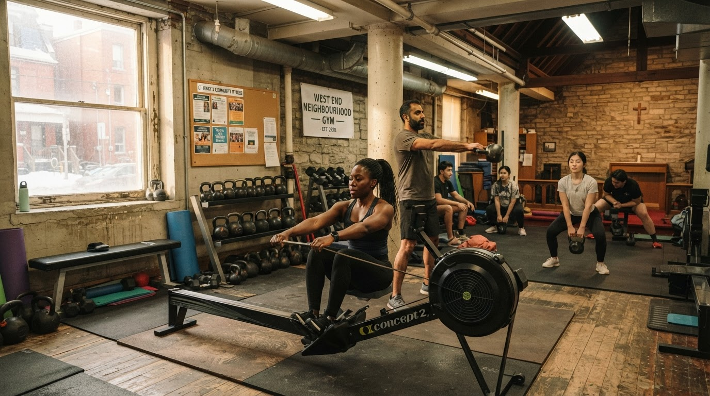

Christian Fitness
The Abundant Weekly
No. 48 · Saturday, April 11, 2026
Morning, Grace.
Spring finally showed up, and so did you: 142 of you have signed up for the Easter Sunrise 5K, our biggest start line yet.
Naomi Clarke, editor
Component · Data display
A newsletter issue is The Abundant Weekly as readers get it: the email's web version, and a short preview of the latest issue on Subscribe.
The issue is designed to read the same in an inbox and in a browser, so it is one narrow column (--layout-measure) with a brand masthead and a dark footer.
.issue-page): the web version at /newsletter, on the canvas with a small viewer bar (back to Christian Fitness, issue number) from 640px..issue): masthead (brand, name, number and date), then sections in a fixed order: the editor's note, the big story, "On the calendar", "Worth your time" (a plain headline list), a verse, and the footer with Manage preferences, Follow by RSS and Unsubscribe..issue-preview): beside the Subscribe form, so people see what they are signing up for: the latest number, the lead image and headline, two briefs and "Read the full issue".The admin newsletter builder composes an issue from cards and does not render this block; its Preview opens the web version.
Christian Fitness
The Abundant Weekly
No. 48 · Saturday, April 11, 2026
Morning, Grace.
Spring finally showed up, and so did you: 142 of you have signed up for the Easter Sunrise 5K, our biggest start line yet.
Naomi Clarke, editor
--font-size-5xl (6xl from 640px), then "No. 48 · Saturday, April 11, 2026"..issue__section, separated by hairlines: here the editor's note with greeting and sign-off..issue__text, --font-size-lg with relaxed leading.Christian Fitness
The Abundant Weekly
No. 48 · Saturday, April 11, 2026
Morning, Grace.
Spring finally showed up, and so did you: 142 of you have signed up for the Easter Sunrise 5K, our biggest start line yet.
Naomi Clarke, editor
The big story · Community

Rowers, kettlebells and a Thursday prayer circle: how St. Anne’s made fitness the front door to its parish.
Read the storyApr
18
Easter Sunrise 5K
Apr
21
Couch to 5K: Week 3
“Do you not know that your bodies are temples of the Holy Spirit?”
1 Corinthians 6:19
h1.)<div class="issue-page"><div class="issue-page__bar"><a class="back-link" href="#top"><svg class="icon" viewBox="0 0 24 24" aria-hidden="true"><path d="m12 19-7-7 7-7"/><path d="M19 12H5"/></svg> Christian Fitness</a><span>Issue 48 · web version</span></div><article class="issue"><header class="issue__masthead"><p class="issue__brand"><svg class="seal seal--lockup seal--light" viewBox="0 0 200 200" aria-hidden="true"><circle class="seal__ring" cx="100" cy="100" r="96" stroke-width="7"/><rect class="seal__cross" x="88" y="38" width="24" height="128" rx="2"/><rect class="seal__cross" x="56" y="70" width="88" height="22" rx="2"/></svg><span>Christian Fitness</span></p><p class="display issue__title">The Abundant Weekly</p><p class="issue__date">No. 48 · Saturday, April 11, 2026</p></header><div class="issue__body"><section class="issue__section"><p class="issue__greeting">Morning, Grace.</p><p class="issue__text">Spring finally showed up, and so did you: 142 of you have signed up for the Easter Sunrise 5K, our biggest start line yet.</p><p class="issue__signoff">Naomi Clarke, editor</p></section><section class="issue__section"><p class="story__section">The big story · Community</p><img class="issue__image" src="../../mocks/assets/images/church-gym.jpg" alt="" width="1376" height="768"><h3 class="issue__lead-title">A West End church turned its basement into a free gym. Two hundred neighbours now train there every week</h3><p class="issue__text">Rowers, kettlebells and a Thursday prayer circle: how St. Anne’s made fitness the front door to its parish.</p><a class="btn btn--primary issue__action" href="#top">Read the story</a></section><section class="issue__section"><h3 class="display rule-title">On the calendar</h3><ul class="list-divided"><li class="event-row"><div class="event-row__date"><p class="event-row__month">Apr</p><p class="event-row__day">18</p></div><div class="event-row__body"><p class="event-row__title event-row__title--wrap">Easter Sunrise 5K</p><p class="event-row__meta">Sat 6:45 AM · Waterfront · Free</p></div></li><li class="event-row"><div class="event-row__date"><p class="event-row__month">Apr</p><p class="event-row__day">21</p></div><div class="event-row__body"><p class="event-row__title event-row__title--wrap">Couch to 5K: Week 3</p><p class="event-row__meta">Tue 6:30 PM · Etobicoke · Free</p></div></li></ul><a class="inline-link issue__more" href="#top">See every event</a></section><section class="issue__verse" aria-label="Scripture, example"><blockquote><p class="issue__quote">“Do you not know that your bodies are temples of the Holy Spirit?”</p><cite class="issue__cite">1 Corinthians 6:19</cite></blockquote></section></div><footer class="issue__footer"><p>You’re getting this because you subscribed at christianfitness.ca. Know someone who’d like it? Forward it on.</p><p class="issue__links"><a href="#top">Manage preferences</a><a href="#top">Follow by RSS</a><a href="#top">Unsubscribe</a></p><p>Christian Fitness · Toronto, ON</p></footer></article></div><div class="w-80"><aside class="issue-preview" aria-label="Latest issue, example"><div class="issue-preview__head"><p class="display rule-title rule-title--inline">Latest issue</p><p class="issue-preview__no">No. 48</p></div><img class="issue-preview__image" src="../../mocks/assets/images/church-gym.jpg" alt="" width="1376" height="768"><p class="issue-preview__lead">A West End church turned its basement into a free gym. Two hundred neighbours now train there every week</p><ul class="list-ruled issue-preview__list"><li><p class="story__section">Events</p><p class="issue-preview__brief">Easter Sunrise 5K hits a record 142 sign-ups with ten days to go</p></li><li><p class="story__section">Pros</p><p class="issue-preview__brief">Danielle Okafor on coaching strength without the shame</p></li></ul><a class="text-link issue-preview__more" href="#top">Read the full issue <svg class="icon" viewBox="0 0 24 24" aria-hidden="true"><path d="M5 12h14"/><path d="m12 5 7 7-7 7"/></svg></a></aside></div>The issue is --layout-measure (42rem) wide at most; the preview fills its column. Side padding is 24px, 40px from 640px.
The issue is read-only. Its page loads and can fail; links have the usual states, and footer links on the chrome surface use --color-focus-ring-on-dark.
Loading the newsletter
<div aria-busy="true" aria-live="polite"><p class="visually-hidden">Loading the newsletter</p><div class="issue"><div class="issue__body skeleton-stack"><span class="skeleton skeleton--title-lg"></span><span class="skeleton skeleton--text w-40"></span><span class="skeleton skeleton--block skeleton--image-16x9"></span><span class="skeleton skeleton--title"></span><span class="skeleton skeleton--text w-90"></span><span class="skeleton skeleton--text w-80"></span></div></div></div>This issue didn't load
We couldn't reach Christian Fitness. Check your connection and try again.
Reference CF-N6W4
<div class="issue"><div class="issue__body"><div class="error-state" role="alert"><span class="error-state__icon"><svg class="icon" viewBox="0 0 24 24" aria-hidden="true"><circle cx="12" cy="12" r="10"/><line x1="12" x2="12" y1="8" y2="12"/><line x1="12" x2="12.01" y1="16" y2="16"/></svg></span><div><p class="display empty-state__title">This issue didn't load</p><p class="empty-state__text">We couldn't reach Christian Fitness. Check your connection and try again.</p><div class="empty-state__actions"><a class="btn btn--primary btn--sm" href="#top"><svg class="icon" viewBox="0 0 24 24" aria-hidden="true"><path d="M21 12a9 9 0 1 1-9-9c2.52 0 4.93 1 6.74 2.74L21 8"/><path d="M21 3v5h-5"/></svg>Try again</a><a class="btn btn--secondary btn--sm" href="#top">Back to news</a></div><p class="error-state__ref">Reference CF-N6W4</p></div></div></div></div>| Variant | Default | Hover | Focus |
|---|---|---|---|
| Read the story | Read the story | Read the story | Read the story |
| See every event | See every event | — | See every event |
| Footer link | — |
Christian Fitness
The Abundant Weekly
No. 48 · Saturday, April 11, 2026
Morning, Grace.
Spring finally showed up, and so did you: 142 of you have signed up for the Easter Sunrise 5K, our biggest start line yet.
Naomi Clarke, editor
Christian Fitness
The Abundant Weekly
No. 48 · Saturday, April 11, 2026
Morning, Grace.
Spring finally showed up, and so did you: 142 of you have signed up for the Easter Sunrise 5K, our biggest start line yet.
Naomi Clarke, editor
The issue does not follow the reader's theme in email clients; on the web it does, through the same tokens.
--font-size-6xl.The issue sits on --color-bg-surface over the page's --color-bg-canvas. The masthead is --color-bg-brand with --color-fg-on-brand and --color-fg-on-brand-strong; the footer --color-bg-chrome with --color-fg-on-chrome-muted text and --color-fg-on-chrome links. The cite and "See every event" read --color-fg-accent. The preview is the canvas colour with a 2px ink rule under its head.
An <article> with a <header> (the masthead, whose title is the page's h1) and a <footer>. Sections are <section aria-labelledby> their h2; the verse is a <blockquote> with <cite> in a section labelled "Scripture". The preview is an <aside> labelled by its heading.
| Key | Action |
|---|---|
| Tab | Back link, Read the story, See every event, the footer links. |
| Enter | Follows the link. |
The shared ring on the surface; --color-focus-ring-on-dark on footer links.
Images are decorative. Footer links are underlined so they read as links on the dark surface without colour.
None.
Footer links, "See every event" and buttons are 44px tall (--target-comfortable), with 20px between footer links.
| Part | Token | Light | Dark |
|---|---|---|---|
| Page / issue | --color-bg-canvas / --color-bg-surface | ||
| Masthead | --color-bg-brand / --color-fg-on-brand / --color-fg-on-brand-strong | ||
| Footer | --color-bg-chrome / --color-fg-on-chrome / --color-fg-on-chrome-muted | ||
| Footer focus | --color-focus-ring-on-dark | ||
| Cite, more | --color-fg-accent | ||
| Section rules | --color-border-default | ||
| Width | --layout-measure | ||
| Title | --font-size-5xl / --font-size-6xl / --line-height-display | / / | |
| Body text | --font-size-lg / --line-height-relaxed | / | |
| Padding | --space-6 / --space-7 / --space-10 | / / | |
| Link height | --target-comfortable | ||
<article class="issue">
<header class="issue__masthead">
<p class="issue__brand"><svg class="seal seal--lockup seal--light" aria-hidden="true">…</svg><span>Christian Fitness</span></p>
<h1 class="display issue__title">The Abundant Weekly</h1>
<p class="issue__date">No. 48 · Saturday, April 11, 2026</p>
</header>
<div class="issue__body">
<section class="issue__section">…</section>
<section class="issue__verse" aria-label="Scripture">
<blockquote><p class="issue__quote">“…”</p><cite class="issue__cite">1 Corinthians 6:19</cite></blockquote>
</section>
</div>
<footer class="issue__footer">
<p>You’re getting this because you subscribed at christianfitness.ca…</p>
<p class="issue__links"><a href="/subscribe">Manage preferences</a><a href="/subscribe#rss">Follow by RSS</a><a href="/unsubscribe?t=…">Unsubscribe</a></p>
</footer>
</article>| Class / attribute | Effect |
|---|---|
.issue-page __bar | Web-version page and its viewer bar (640px+). |
.issue __masthead __brand __title __date | The issue and its brand band. |
__body __section __greeting __text __signoff | Sections and the editor's note. |
__image __lead-title __action __more | The big story and calendar link. |
__verse __quote __cite | The verse. |
__footer __links | Chrome footer and its links. |
.issue-preview __head __no __image __lead __list __brief __more | The latest-issue preview. |
Extracted from these mocks:
Drift fixed during extraction: The admin newsletter builder (pages/admin-newsletter) does not render .issue or .issue-preview. Fixed: footer links, .issue__more and .issue-preview__more were 24px tall (--target-min); they now use --target-comfortable.